<!DOCTYPE html>
<html>
<head><meta name="generator" content="Hexo 3.8.0">
  <meta charset="utf-8">
  
  <meta http-equiv="X-UA-Compatible" content="IE=edge">
  <title>HopeLeft</title>
  <meta name="viewport" content="width=device-width, initial-scale=1, maximum-scale=1">
  <meta property="og:type" content="website">
<meta property="og:title" content="HopeLeft">
<meta property="og:url" content="http://blog.hopeleft.com/index.html">
<meta property="og:site_name" content="HopeLeft">
<meta property="og:locale" content="zh-Hans">
<meta name="twitter:card" content="summary">
<meta name="twitter:title" content="HopeLeft">
  
    <link rel="alternative" href="/atom.xml" title="HopeLeft" type="application/atom+xml">
  
  
    <link rel="icon" href="/favicon.ico">
  
  <link rel="stylesheet" href="/css/style.css">
</head>
</html>
<body>
  <div id="container">
    <div class="left-col">
    <div class="overlay"></div>
<div class="intrude-less">
	<header id="header" class="inner">
		<a href="/" class="profilepic">
			
			
			
		</a>

		<hgroup>
		  <h1 class="header-author"><a href="/">Lyn</a></h1>
		</hgroup>

		

		
			<div class="switch-btn">
				<div class="icon">
					<div class="icon-ctn">
						<div class="icon-wrap icon-house" data-idx="0">
							<div class="birdhouse"></div>
							<div class="birdhouse_holes"></div>
						</div>
						<div class="icon-wrap icon-ribbon hide" data-idx="1">
							<div class="ribbon"></div>
						</div>
						
						<div class="icon-wrap icon-link hide" data-idx="2">
							<div class="loopback_l"></div>
							<div class="loopback_r"></div>
						</div>
						
						
						<div class="icon-wrap icon-me hide" data-idx="3">
							<div class="user"></div>
							<div class="shoulder"></div>
						</div>
						
					</div>
					
				</div>
				<div class="tips-box hide">
					<div class="tips-arrow"></div>
					<ul class="tips-inner">
						<li>菜单</li>
						<li>标签</li>
						
						<li>友情链接</li>
						
						
						<li>关于我</li>
						
					</ul>
				</div>
			</div>
		

		<div class="switch-area">
			<div class="switch-wrap">
				<section class="switch-part switch-part1">
					<nav class="header-menu">
						<ul>
						
							<li><a href="/">主页</a></li>
				        
							<li><a href="/archives">所有文章</a></li>
				        
							<li><a href="/tags/随笔">随笔</a></li>
				        
						</ul>
					</nav>
					<nav class="header-nav">
						<div class="social">
							
								<a class="github" target="_blank" href="https://github.com/HopeLyn" title="github">github</a>
					        
								<a class="rss" target="_blank" href="/atom.xml" title="rss">rss</a>
					        
								<a class="mail" target="_blank" href="mailto:buaa_lyn@163.com" title="mail">mail</a>
					        
								<a class="google" target="_blank" href="mailto:buaaxigua@gmail.com" title="google">google</a>
					        
								<a class="linkedin" target="_blank" href="https://cn.linkedin.com/in/yannan-li-abb147a3" title="linkedin">linkedin</a>
					        
						</div>
					</nav>
				</section>
				
				
				<section class="switch-part switch-part2">
					<div class="widget tagcloud" id="js-tagcloud">
						<a href="/tags/实践/" style="font-size: 10px;">实践</a> <a href="/tags/工具/" style="font-size: 20px;">工具</a> <a href="/tags/工具使用/" style="font-size: 10px;">工具使用</a> <a href="/tags/游戏攻略/" style="font-size: 10px;">游戏攻略</a> <a href="/tags/语法/" style="font-size: 15px;">语法</a> <a href="/tags/随笔/" style="font-size: 10px;">随笔</a>
					</div>
				</section>
				
				
				
				<section class="switch-part switch-part3">
					<div id="js-friends">
					
			          <a target="_blank" class="main-nav-link switch-friends-link" href="http://localhost:4000/">奥巴马的博客</a>
			        
			          <a target="_blank" class="main-nav-link switch-friends-link" href="http://localhost:4000/">卡卡的美丽传说</a>
			        
			          <a target="_blank" class="main-nav-link switch-friends-link" href="http://localhost:4000/">本泽马的博客</a>
			        
			          <a target="_blank" class="main-nav-link switch-friends-link" href="http://localhost:4000/">吉格斯的博客</a>
			        
			          <a target="_blank" class="main-nav-link switch-friends-link" href="http://localhost:4000/">习大大大不同</a>
			        
			          <a target="_blank" class="main-nav-link switch-friends-link" href="http://localhost:4000/">托蒂的博客</a>
			        
			        </div>
				</section>
				

				
				
				<section class="switch-part switch-part4">
				
					<div id="js-aboutme">喜欢编程，热爱生活的🍉君</div>
				</section>
				
			</div>
		</div>
	</header>				
</div>

    </div>
    <div class="mid-col">
      <nav id="mobile-nav">
  	<div class="overlay">
  		<div class="slider-trigger"></div>
  		<h1 class="header-author js-mobile-header hide">Lyn</h1>
  	</div>
	<div class="intrude-less">
		<header id="header" class="inner">
			<div class="profilepic">
			
				
			
			</div>
			<hgroup>
			  <h1 class="header-author">Lyn</h1>
			</hgroup>
			
			<nav class="header-menu">
				<ul>
				
					<li><a href="/">主页</a></li>
		        
					<li><a href="/archives">所有文章</a></li>
		        
					<li><a href="/tags/随笔">随笔</a></li>
		        
		        <div class="clearfix"></div>
				</ul>
			</nav>
			<nav class="header-nav">
				<div class="social">
					
						<a class="github" target="_blank" href="https://github.com/HopeLyn" title="github">github</a>
			        
						<a class="rss" target="_blank" href="/atom.xml" title="rss">rss</a>
			        
						<a class="mail" target="_blank" href="mailto:buaa_lyn@163.com" title="mail">mail</a>
			        
						<a class="google" target="_blank" href="mailto:buaaxigua@gmail.com" title="google">google</a>
			        
						<a class="linkedin" target="_blank" href="https://cn.linkedin.com/in/yannan-li-abb147a3" title="linkedin">linkedin</a>
			        
				</div>
			</nav>
		</header>				
	</div>
</nav>

      <div class="body-wrap">
  
    <article id="post-VSCode-基本操作" class="article article-type-post" itemscope itemprop="blogPost">
  
    <div class="article-meta">
      <a href="/2019/02/27/VSCode-基本操作/" class="article-date">
  	<time datetime="2019-02-27T06:34:04.000Z" itemprop="datePublished">2019-02-27</time>
</a>
    </div>
  
  <div class="article-inner">
    
      <input type="hidden" class="isFancy">
    
    
      <header class="article-header">
        
  
    <h1 itemprop="name">
      <a class="article-title" href="/2019/02/27/VSCode-基本操作/">VSCode 基本操作</a>
    </h1>
  

      </header>
      
    
    <div class="article-entry" itemprop="articleBody">
      
        <h1 id="VS-Code"><a href="#VS-Code" class="headerlink" title="VS Code"></a>VS Code</h1><h2 id="基本操作"><a href="#基本操作" class="headerlink" title="基本操作"></a>基本操作</h2><ul>
<li><p>命令面板：cmd + shift + p</p>
<ul>
<li>Code Cli 的安装</li>
</ul>
</li>
<li><p>光标移动</p>
<ul>
<li>单词：option + 左右</li>
<li>行：cmd + 左右</li>
<li><strong>代码块</strong>：cmd + shift + \ =&gt; <strong>很关键</strong></li>
<li><strong>文件</strong>：cmd + 上下</li>
</ul>
</li>
<li><p>文本选择 + <code>shift</code></p>
<ul>
<li>单词：option + 左右 + shift</li>
<li>行：cmd + 左右 + shift</li>
</ul>
</li>
<li><p>操作</p>
<ul>
<li>删除代码<ul>
<li>删除行<ul>
<li>cmd + fn + delete 右侧所有代码</li>
<li>cmd + delete 左侧所有代码</li>
</ul>
</li>
<li>删除单词<ul>
<li>option + fn + delete 右侧所有代码</li>
<li>option + delete 左侧所有代码</li>
</ul>
</li>
<li>删除当前行 cmd + shift + k</li>
<li>剪切当前行 cmd + x</li>
</ul>
</li>
<li>移动一行代码：option + 上下</li>
</ul>
</li>
<li><p><code>keyboard</code> 查看键位绑定：cmd + k cmd + s</p>
</li>
</ul>
<h2 id="进阶操作"><a href="#进阶操作" class="headerlink" title="进阶操作"></a>进阶操作</h2><ul>
<li><p>代码格式化：format</p>
<ul>
<li>option + shift + f</li>
</ul>
</li>
<li><p>排序：sort line ascending =&gt; cmd + shift + p</p>
</li>
<li><p>多光标操作 =&gt; <strong>？</strong> <code>https://time.geekbang.org/column/article/40261</code></p>
<ul>
<li>cmd + d =&gt; 选中左边第一个单词</li>
<li>选中多行后，option + shift + i =&gt; 多行行尾添加光标</li>
</ul>
</li>
</ul>
<h4 id="文件跳转"><a href="#文件跳转" class="headerlink" title="文件跳转"></a>文件跳转</h4><pre><code>*    cmd + p =&gt; 最近的文件列表(或者查找文件)
    *    cmd + enter =&gt; 新窗口里打开 =&gt; **可以对比不同**
    *     打开以后发现它是可切换状态，因为你没有编辑，你可以手动 cmd + s 去固定这个标签页
    

*    ctrl + tab 切换
*    cmd + option + 左右 =&gt; 浏览器里可以通用
</code></pre><ul>
<li>行跳转：ctrl + g =&gt; 在查看 git 冲突的时候 =&gt; vim 模式 <code>:number</code></li>
</ul>
<h4 id="符号跳转"><a href="#符号跳转" class="headerlink" title="符号跳转"></a>符号跳转</h4><ul>
<li>cmd + shift + o：跳转类(类似于大纲，在组件的功能了解中很方便)</li>
<li>cmd + t：跨文件查找调用方法的定义(比如查找接口调用的时候)</li>
</ul>
<h4 id="函数跳转"><a href="#函数跳转" class="headerlink" title="函数跳转"></a>函数跳转</h4><ul>
<li>cmd + f12：跳转方法实现</li>
<li>f12: 跳转方法定义</li>
<li><p>shift + f12：查看方法调用</p>
<ul>
<li>space 打开</li>
</ul>
</li>
<li><p>f2：快速修改方法/函数名(相关的调用/定义)</p>
</li>
<li><p>cmd + option + [/] =&gt; 代码折叠，看代码逻辑的时候特别好用，和 cmd + shift + 左右 都特别适合看代码</p>
</li>
<li>cmd + k -&gt; cmd + 0 =&gt; 折叠文件<ul>
<li>cmd + k -&gt; cmd + j</li>
</ul>
</li>
</ul>
<h3 id="自动补全、快速修复、重构-gt-https-time-geekbang-org-column-article-40847"><a href="#自动补全、快速修复、重构-gt-https-time-geekbang-org-column-article-40847" class="headerlink" title="自动补全、快速修复、重构 =&gt; https://time.geekbang.org/column/article/40847"></a>自动补全、快速修复、重构 =&gt; <a href="https://time.geekbang.org/column/article/40847" target="_blank" rel="noopener">https://time.geekbang.org/column/article/40847</a></h3><h3 id="代码折叠、小地图、面包屑"><a href="#代码折叠、小地图、面包屑" class="headerlink" title="代码折叠、小地图、面包屑"></a>代码折叠、小地图、面包屑</h3><h4 id="面包屑-gt-可能有人更喜欢这个而不是文件资源管理器"><a href="#面包屑-gt-可能有人更喜欢这个而不是文件资源管理器" class="headerlink" title="面包屑 =&gt; 可能有人更喜欢这个而不是文件资源管理器"></a>面包屑 =&gt; 可能有人更喜欢这个而不是文件资源管理器</h4><ul>
<li>打开面包屑 cmd + shift + .</li>
<li>option + 左/右 =&gt; 切换层级</li>
</ul>
<h3 id="极速搜索"><a href="#极速搜索" class="headerlink" title="极速搜索"></a>极速搜索</h3><ul>
<li>cmd + f：自动选中当前光标所在的单词</li>
<li>cmd + g：搜索，但是光标仍在编辑区</li>
</ul>
<p>大小写敏感，全单词匹配、正则匹配</p>
<p>替换：cmd + option + f</p>
<h3 id="全局查找"><a href="#全局查找" class="headerlink" title="全局查找"></a>全局查找</h3><ul>
<li>cmd + shift + f 查找</li>
<li>cmd + 下 切换到相应搜索结果</li>
<li>o 打开搜索列表</li>
</ul>
<h3 id="查找-定位"><a href="#查找-定位" class="headerlink" title="查找/定位"></a>查找/定位</h3><ul>
<li>cmd + f <ul>
<li>enter =&gt; 下一个</li>
<li>shift + enter =&gt; 上一个</li>
</ul>
</li>
</ul>
<h3 id="切换工作区"><a href="#切换工作区" class="headerlink" title="切换工作区"></a>切换工作区</h3><ul>
<li>cmd + shift + e =&gt; 文件资源管理器</li>
<li>cmd + shift + x =&gt; 插件管理</li>
<li>ctrl + shift + g =&gt; 源代码管理</li>
</ul>
<p>右击工作区即可<br>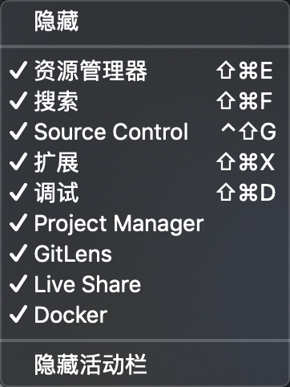</p>
<h3 id="切换窗口"><a href="#切换窗口" class="headerlink" title="切换窗口"></a>切换窗口</h3><p>支持多工作区模式，但是更支持多窗口，一个工作区对应一个窗口</p>
<ul>
<li>ctrl + w =&gt; 切换多窗口</li>
</ul>
<h4 id="markdown-预览"><a href="#markdown-预览" class="headerlink" title="markdown 预览"></a>markdown 预览</h4><p>cmd + k 、v</p>
<h4 id="查找键位绑定-keyboard"><a href="#查找键位绑定-keyboard" class="headerlink" title="查找键位绑定 keyboard"></a>查找键位绑定 keyboard</h4><ul>
<li>录制按钮</li>
</ul>
<p>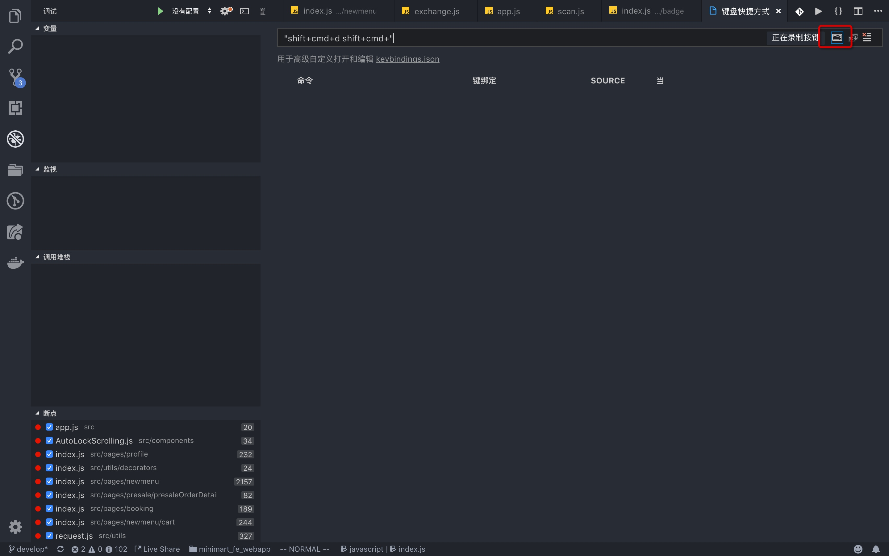</p>
<h3 id="编辑器配置"><a href="#编辑器配置" class="headerlink" title="编辑器配置"></a>编辑器配置</h3><ul>
<li>垂直标尺 =&gt; “editor.rulers”: [120] =&gt; 120字符</li>
<li>缩进参考线 =&gt; “editor.renderIndentGuides”: true</li>
<li>lineNumber</li>
<li>空格处填充符号 =&gt; “editor.renderWhitespace”: “boundary”</li>
<li>左侧行号也添加了背景号 =&gt;  “editor.renderLineHighlight”: “all”</li>
</ul>
<h4 id="其它配置"><a href="#其它配置" class="headerlink" title="其它配置"></a>其它配置</h4><ul>
<li>tabSize、lineHeight、autoSave/autoSaveDelay</li>
<li><code>terminal.integrated.shell.osx</code>: zsh</li>
<li>“files.exclude”:  { “**/node_modules”: true } =&gt; 加快编辑器运行速度</li>
</ul>
<h4 id="悬浮注解"><a href="#悬浮注解" class="headerlink" title="悬浮注解"></a>悬浮注解</h4><p>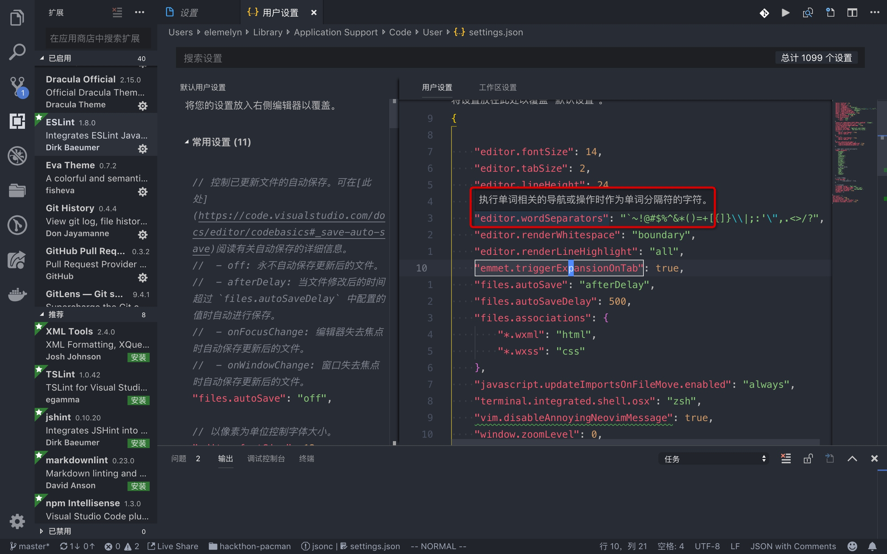</p>
<h3 id="编辑器管理"><a href="#编辑器管理" class="headerlink" title="编辑器管理"></a>编辑器管理</h3><h4 id="窗口管理"><a href="#窗口管理" class="headerlink" title="窗口管理"></a>窗口管理</h4><ul>
<li>cmd + \ =&gt; 打开新窗口<ul>
<li>cmd + 1/2/3 =&gt; 切换窗口</li>
<li>cmd + option + 0(数字) =&gt; 切换布局方向(垂直/水平)</li>
</ul>
</li>
</ul>
<h4 id="Tab-管理"><a href="#Tab-管理" class="headerlink" title="Tab 管理"></a>Tab 管理</h4><ul>
<li>ctrl + tab</li>
<li>option + cmd + 左/右</li>
<li>cmd + p</li>
</ul>
<h3 id="视图切换"><a href="#视图切换" class="headerlink" title="视图切换"></a>视图切换</h3><ul>
<li>cmd + B =&gt; 左侧边栏的展示/隐藏</li>
<li>zen =&gt; 只留下代码</li>
<li>cmd + j =&gt; 查看 code spell check 的报错<br>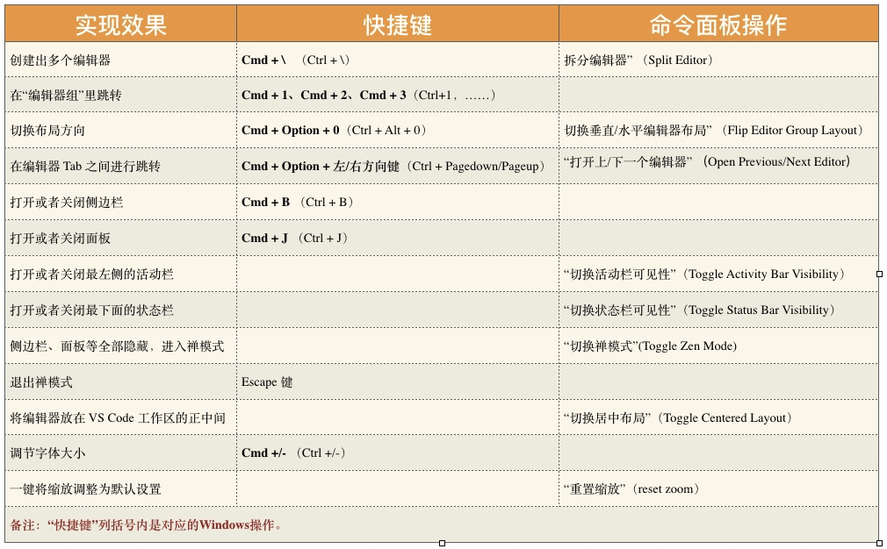</li>
</ul>
<h3 id="插件篇"><a href="#插件篇" class="headerlink" title="插件篇"></a>插件篇</h3><h4 id="BASIC"><a href="#BASIC" class="headerlink" title="BASIC"></a>BASIC</h4><ul>
<li>code spell checker：检查单词拼写错误</li>
<li>Bracket Pair Colorizer：彩色的括号</li>
<li>Document This：为 function、class 等自动生成文档</li>
<li>Gitlens：Git 集成工具<ul>
<li>当前行展示 git blame 信息</li>
</ul>
</li>
<li>Material Icon Theme/vscode-icons：文件夹icon的多样性</li>
<li><p>TODO Highlight：List TODO list<br>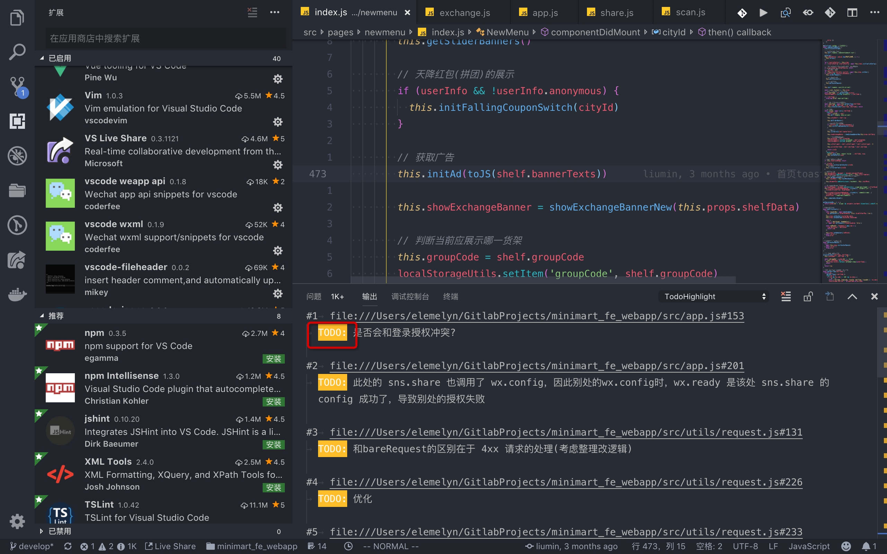</p>
</li>
<li><p>Vim：</p>
</li>
<li>vscode-fileheader：ctrl + option + i 生成新文件的文档 =&gt; 孙悟空到此一游</li>
<li>Path Intellisense：补全文件路径名</li>
<li>Faker：生产 fake name =&gt; 就像名字一样废…</li>
</ul>
<h4 id="ADDITIONS"><a href="#ADDITIONS" class="headerlink" title="ADDITIONS"></a>ADDITIONS</h4><ul>
<li>pigment：可以直接看到当前的色彩</li>
<li>settings sync：generate key =&gt; 保存到 gists 上</li>
<li>project manager =&gt; 保存以后很方便可以切换(打开的/未打开的)工程</li>
<li><p>live share =&gt; 登录就可以修改别人的工程文件，而不需要拉代码</p>
</li>
<li><p>.vscode 中添加 recommendations =&gt; vscode 会提示安装</p>
</li>
</ul>
<p>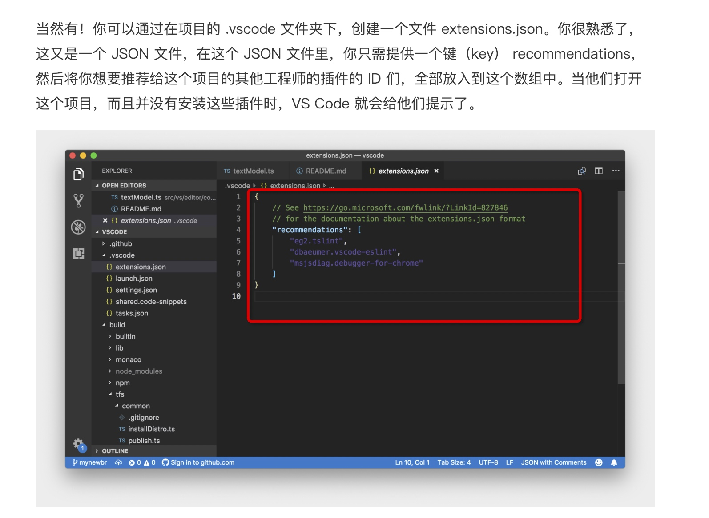</p>
<h2 id="mac-note-的使用"><a href="#mac-note-的使用" class="headerlink" title="mac note 的使用"></a>mac note 的使用</h2><ul>
<li>ctrl + shift + tab 或者 ctrl + tab</li>
</ul>
<h2 id="浏览器"><a href="#浏览器" class="headerlink" title="浏览器"></a>浏览器</h2><ul>
<li>f12 调出来控制台</li>
<li>debugger 控制台<ul>
<li>f8、f10、f11</li>
<li>esc：source debugger 的时候可以调出 console 控制台</li>
</ul>
</li>
<li>cmd + shift + n 打开隐身窗口</li>
<li>shift + w =&gt; 在新的窗口打开浏览页</li>
</ul>
<h3 id="插件"><a href="#插件" class="headerlink" title="插件"></a>插件</h3><ul>
<li>vimium<ul>
<li>j、k 上下挪动页面</li>
<li>yy：复制当前 url</li>
<li>p/P：当前剪贴板的 url 复制到地址栏</li>
<li>o/O：打开bookMark、收藏栏、历史记录中的页面</li>
<li>T：查找当前打开的 tab</li>
<li>r：reload page</li>
<li>shift + ? 查看快捷键</li>
<li>查找模式<ul>
<li>/xxx：查找 xxx</li>
<li>n/N：上/下一个</li>
</ul>
</li>
</ul>
</li>
</ul>
<h3 id="其它插件"><a href="#其它插件" class="headerlink" title="其它插件"></a>其它插件</h3><ul>
<li>有道划词/网易有道词典鼠标取词：查询方便，划词翻译快速</li>
<li>二维码生成</li>
<li>great suspender</li>
<li>各种 devtools：redux、MobX、vue、React</li>
<li>Github 相关的文件管理侧边栏</li>
</ul>
<h2 id="iTerm-2-使用"><a href="#iTerm-2-使用" class="headerlink" title="iTerm 2 使用"></a>iTerm 2 使用</h2><ul>
<li>选择文本: <code>cmd + f</code>搜索 ＋ <code>tab</code>选中文本，会自动添加到剪切板，使用<code>cmd + v</code>即可使用</li>
<li>临时调用iterm: 通过hotkey的设置 =&gt; <code>shift + space</code> =&gt; <strong>可以尝试使用cal看今天是周几，不过使用台历也没有问题</strong><br>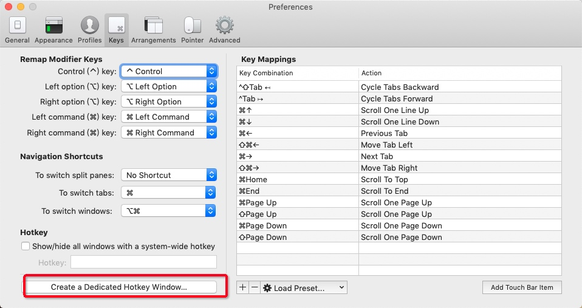</li>
</ul>
<ul>
<li>命令行标记: <code>cmd + shift + m</code>可以为某一行(或者说某一屏幕添加标记),之后可以使用<code>cmd + shift + j</code>跳回这里<ul>
<li>比如一些安装步骤或者看到日志需要对比的时候可以打标记</li>
</ul>
</li>
<li>剪贴板历史: <code>cmd + shift + h</code>可以查看(iterm)剪贴板历史纪录</li>
<li>查看操作历史(快照): <code>cmd + option + B</code>可以查看之前一段时间内的操作的快照(阴险)</li>
</ul>
<p>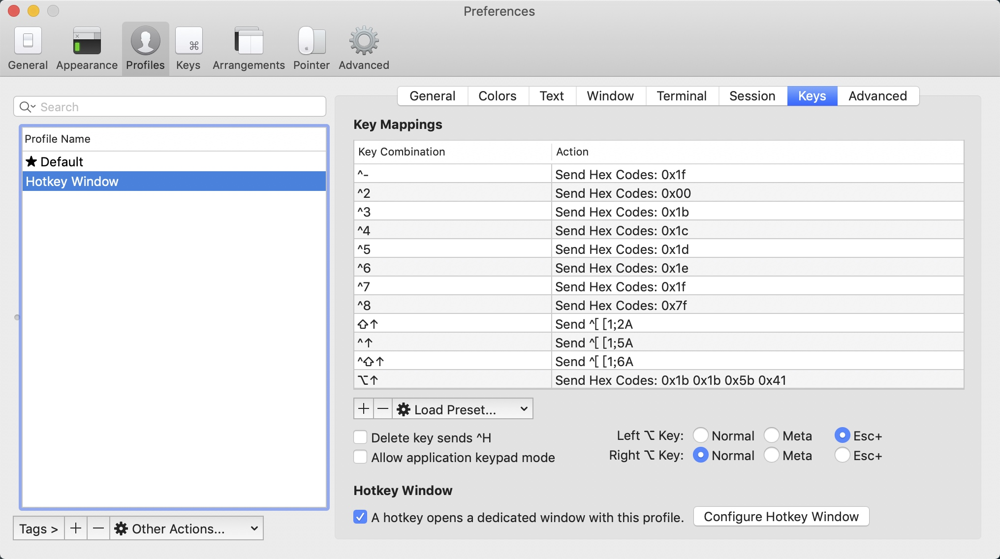</p>
<ul>
<li>option + b、option + f</li>
<li><p>iTerm2</p>
<ul>
<li><ol>
<li>分窗口操作：<code>shift+command+d</code>（横向）command+d（竖向）</li>
</ol>
<ul>
<li><code>cmd + opt + 方向键</code>: 切换窗口内的面板 </li>
</ul>
</li>
<li><ol start="2">
<li>查找和粘贴：command+f，呼出查找功能，tab 键选中找到的文本，<code>option+enter</code> 粘贴</li>
</ol>
</li>
<li><ol start="3">
<li>全屏快捷键是 <code>cmd+enter</code> 而不是默认的 <code>ctrl+cmd+f</code></li>
</ol>
</li>
</ul>
</li>
<li><p>cmd + k 清屏</p>
</li>
<li>cmd + r 刷新屏幕(上面的记录会保留)</li>
</ul>
<h2 id="切换显示器"><a href="#切换显示器" class="headerlink" title="切换显示器"></a>切换显示器</h2><p>因为没有别的切换快捷键，所以可以通过 alfred/spotlight 来实现，所以需要保留一个功能，不要在不同显示屏打开同一个应用，这会导致切换的问题</p>
<ul>
<li>注意，ctrl + 左/右 只会切换鼠标所在位置的屏幕，所以需要使用别的方式切换打开了多个窗口的应用<ul>
<li>vscode: ctrl + w</li>
<li>chrome: vimium 插件的 T </li>
</ul>
</li>
</ul>
<h2 id="MAC-常用快捷键"><a href="#MAC-常用快捷键" class="headerlink" title="MAC 常用快捷键"></a>MAC 常用快捷键</h2><ul>
<li>ctrl + cmd + f =&gt; toggle full screen</li>
<li>cmd + m =&gt; 最小化窗口</li>
<li>ctrl + 方向 =&gt; switch screen </li>
<li>ctrl + 上 =&gt; list screens</li>
<li>cmd + tab =&gt; switch apps 可以使用 alfred/spotlight 替代</li>
<li>cmd + option + esc =&gt; 强制关闭程序</li>
</ul>
<h3 id="终端常用快捷键-https-www-cnblogs-com-mangosoft-p-6375266-html"><a href="#终端常用快捷键-https-www-cnblogs-com-mangosoft-p-6375266-html" class="headerlink" title="终端常用快捷键(https://www.cnblogs.com/mangosoft/p/6375266.html)"></a>终端常用快捷键(<a href="https://www.cnblogs.com/mangosoft/p/6375266.html" target="_blank" rel="noopener">https://www.cnblogs.com/mangosoft/p/6375266.html</a>)</h3><ul>
<li><code>ls</code></li>
<li>mkdir、cd、cp、mv、rm、pwd</li>
<li>history、ctrl + r</li>
<li>env =&gt; 配置环境时需要</li>
<li>cat、find、head/tail、diff(在进行一些实验的时候，可以用来对比实验结果)</li>
<li>wc：看代码量(行、词、字母)</li>
<li>ps、kill</li>
<li><code>du -h 1</code></li>
</ul>
<h2 id="其它电脑配置"><a href="#其它电脑配置" class="headerlink" title="其它电脑配置"></a>其它电脑配置</h2><h3 id="vim"><a href="#vim" class="headerlink" title="vim"></a>vim</h3><p>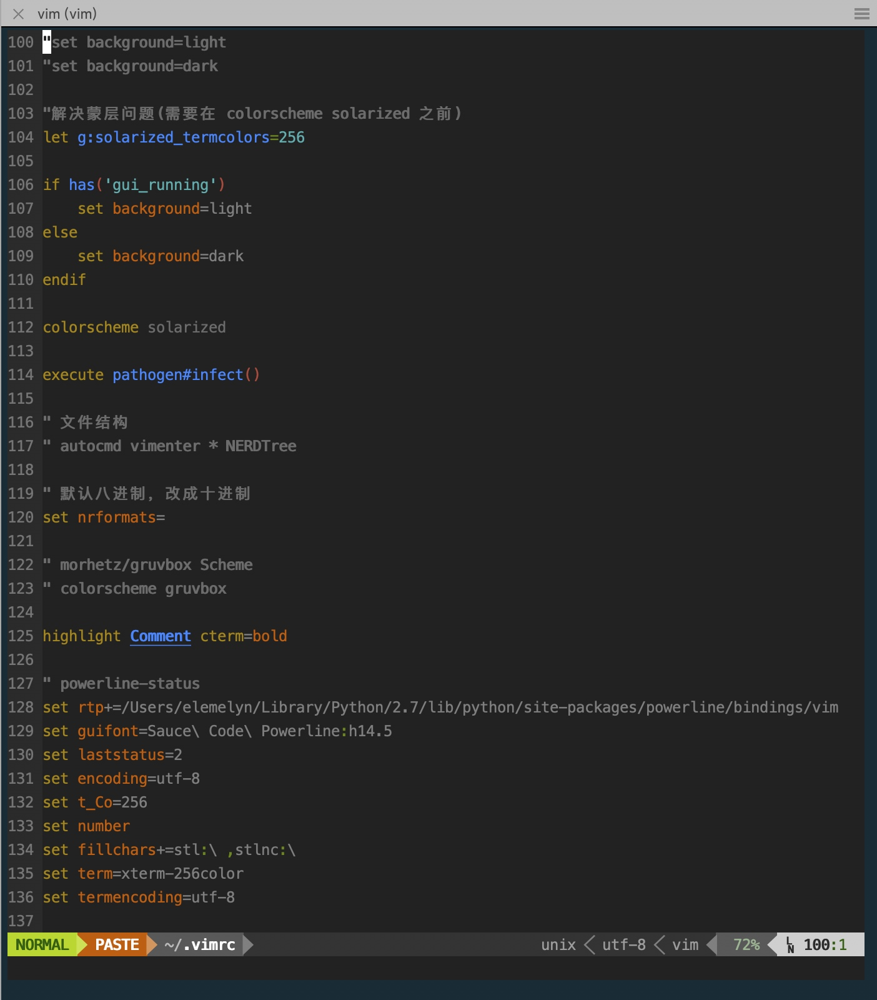</p>
<p>参看： </p>
<ul>
<li><a href="https://realpython.com/vim-and-python-a-match-made-in-heaven/" target="_blank" rel="noopener">Python环境配置</a></li>
<li><p><a href="http://www.ruanyifeng.com/blog/2018/09/vimrc.html" target="_blank" rel="noopener">阮一峰-vim 配置入门</a></p>
</li>
<li><p>插件管理 Vundle</p>
</li>
<li>Powerline</li>
<li>Line Numbering</li>
<li>File Browsing</li>
<li>Color Schemes</li>
<li>Syntax Checking/Highlighting</li>
<li>Auto-Complete</li>
</ul>
<h4 id="其它链接"><a href="#其它链接" class="headerlink" title="其它链接"></a>其它链接</h4><ul>
<li><a href="https://github.com/spf13/spf13-vim" target="_blank" rel="noopener">Vim配置</a></li>
<li><a href="https://github.com/robbyrussell/oh-my-zsh" target="_blank" rel="noopener">oh-my-zsh</a></li>
<li><a href="https://www.cnblogs.com/zhongcq/p/3642794.html" target="_blank" rel="noopener">渐进配置vim</a></li>
</ul>
<h3 id="zsh-插件"><a href="#zsh-插件" class="headerlink" title="zsh 插件"></a>zsh 插件</h3><p>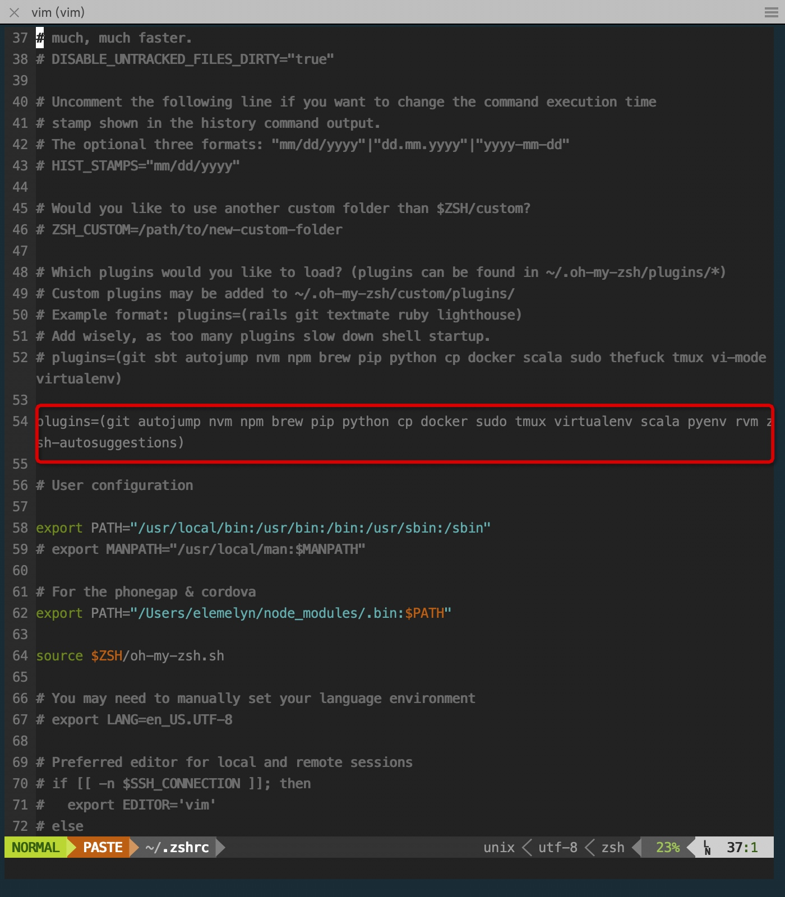</p>
<h2 id="VIM"><a href="#VIM" class="headerlink" title="VIM"></a>VIM</h2><ul>
<li>zM/zR =&gt; 全文折叠/展开</li>
<li>zc/zo: 代码块折叠/展开</li>
<li>多级折叠</li>
<li></li>
</ul>

      
    </div>
    
    <div class="article-info article-info-index">
      
      
	<div class="article-tag tagcloud">
		<ul class="article-tag-list"><li class="article-tag-list-item"><a class="article-tag-list-link" href="/tags/工具使用/">工具使用</a></li></ul>
	</div>

      

      
      <div class="clearfix"></div>
    </div>
    
  </div>
  
</article>


  
    <article id="post-农药攻略" class="article article-type-post" itemscope itemprop="blogPost">
  
    <div class="article-meta">
      <a href="/2019/02/22/农药攻略/" class="article-date">
  	<time datetime="2019-02-22T10:26:06.000Z" itemprop="datePublished">2019-02-22</time>
</a>
    </div>
  
  <div class="article-inner">
    
      <input type="hidden" class="isFancy">
    
    
      <header class="article-header">
        
  
    <h1 itemprop="name">
      <a class="article-title" href="/2019/02/22/农药攻略/">农药攻略</a>
    </h1>
  

      </header>
      
    
    <div class="article-entry" itemprop="articleBody">
      
        <h2 id="常见术语"><a href="#常见术语" class="headerlink" title="常见术语"></a>常见术语</h2><ul>
<li>AP / APC，AD / ADC</li>
<li>行为：打野/反蓝/反红、gank/游走/埋伏、清兵/推线、推塔/偷塔</li>
<li>NPC：暴君/主宰（大小龙）、野怪（小野/红蓝怪/螃蟹）、炮车、近战兵/远程兵/超级兵</li>
<li>角色分类：射手、法师、刺客、战士/突进、辅助</li>
<li>位置分类：上单、中单、射手(下路)、打野、辅助/自由人 =&gt; 分别介绍玩法</li>
<li>建筑：高地、水晶、防御塔(一塔/二塔/高地塔)、泉水</li>
<li>地形：墙壁、草丛</li>
<li>兵线 / 控线 =&gt; 技巧</li>
<li>经济面板</li>
</ul>
<h3 id="机制"><a href="#机制" class="headerlink" title="机制"></a>机制</h3><ul>
<li>恢复自身状态<ul>
<li>一塔前的回血包</li>
<li>自带的恢复技能</li>
<li>部分英雄的技能 =&gt; 亚瑟、铠被动回血，扁鹊、蔡文姬加血技能 =&gt; 出 制裁/梦魇 针对</li>
<li>部分装备 =&gt; 圣杯、噬神；进化水晶、霸者；吸血之镰(末世/泣血/制裁)；提神水晶、炼金护符</li>
</ul>
</li>
<li>刷兵<ul>
<li>3个近战一个远程，一波兵到2级</li>
<li>第七波出现炮车，这个时候安琪拉一波技能收不完，需要加普攻</li>
</ul>
</li>
<li>刷野<ul>
<li>第一波野全收升4级，比线上所有人都快</li>
<li>射手拿一红，可以配合辅助杀人</li>
<li>阵容强势，可以一级反蓝</li>
<li>一个人可以反蓝概率高的：钟馗、猴子、韩信</li>
<li>反反蓝技巧：打野进草丛 =&gt; <strong>配图</strong>，惩戒最后一格血用</li>
</ul>
</li>
<li>杀人<ul>
<li>一血 300</li>
<li>人头初始值 200<ul>
<li>被杀者每死一次都会减钱，但期间杀一次人就恢复 200 初始值</li>
<li>杀人者每杀一次人都会加钱，但只要期间死一次，就恢复 200 初始值</li>
</ul>
</li>
<li>助攻：是杀人者的一半。多人则均分</li>
</ul>
</li>
<li>补兵<ul>
<li>远程 36，10分钟后达到最大值 54</li>
<li>近战 54，10分钟后达到最大值 81</li>
<li>炮车 93，10分钟后达到最大值 140</li>
<li>超兵和炮车一样</li>
<li>主宰/暴君：117</li>
<li>若小兵不是自己打的，则只能得到 77% 经济</li>
<li>队友在身边会分享经验和经济</li>
</ul>
</li>
<li>技能加点 =&gt; 可下载《王者荣耀助手》<ul>
<li>甄姬加点：主二副一，有大点大 =&gt;  一技能需要预判容易放空，二技能只要弹到两次，伤害就高于一技能，而且可以叠加两次标记，配合被动容易杀人</li>
<li>安琪拉：主二副一，有大点大 =&gt; 二技能虽然需要预判，但是升级可以减冷却，而且有持续伤害，配合被动后，总和远高于一技能，并且可以在二技能打到对方身上时多加两次普攻</li>
<li>嬴政：主二副一，有大点大 =&gt; 升级二技能可以增加法强，减少冷却，增加移速，增加生存能力和输出，而一技能更多只能打到敌方一次，起到减速效果，升级意义不大</li>
<li>庄周：主二副一，有大点大 =&gt; 二技能升级减 CD，而且叠加伤害增加，配合被动将成为庄周的主要伤害输出，一技能主要提供减速和远程消耗<ul>
<li>一级的时候看情况加，出门可以留技能点，如果对面射手和辅助在打红，没有第一时间上线，那么可以学二技能清兵，清完一波就有一技能了，趁这个时候还可以打一波螃蟹</li>
</ul>
</li>
</ul>
</li>
</ul>
<h2 id="战前准备"><a href="#战前准备" class="headerlink" title="战前准备"></a>战前准备</h2><ul>
<li>合适的快捷信息，举例说明何时使用 =&gt; 推荐清单</li>
<li>认识不同的英雄，技能，以及定位，并且选择合适的出装：举例说明(打野，劣单，中单，辅助，射手)</li>
<li>合适的铭文 =&gt; 吐槽：没钱的同学可以选择“通用铭文”( AP 出 <code>冷却&gt;法强&gt;法吸&gt;法穿</code>， AD 出 <code>攻击&gt;物吸&gt;暴击&gt;攻速&gt;物穿</code>，辅助出<code>生命+法防/物防+回血</code>)</li>
</ul>
<h2 id="战斗过程"><a href="#战斗过程" class="headerlink" title="战斗过程"></a>战斗过程</h2><ul>
<li>小地图<ul>
<li>发信号</li>
<li></li>
</ul>
</li>
</ul>
<h3 id="各个位置的玩法"><a href="#各个位置的玩法" class="headerlink" title="各个位置的玩法"></a>各个位置的玩法</h3><ul>
<li>中单<ul>
<li>英雄技巧<ul>
<li>安琪拉可以越兵线放技能压人，只要2技能打到，对面不死也要脱层皮</li>
<li>甄姬的话主要是看对面位置，看到对面要上来补兵的时候，放2技能，两次2技能对面就会被冻住，接上1技能再加两次普攻可以单杀</li>
<li>周瑜，不好杀人，但是可以防火加吹风，把兵线压进塔内，对面不好补刀，并且能够对塔造成伤害</li>
</ul>
</li>
<li>时刻注意刺客和辅助的游走，一般看到打野的队友快清完野的时候，对面应该也清完并且升到4级准备杀人了(这时候可以看看经济面板，看对面的等级和装备)</li>
</ul>
</li>
<li><p>上单</p>
<ul>
<li>对面一般会拿一红，抢时间清掉第一波小兵和螃蟹，然后猥琐呆在草丛里吃经验就好，尽量别用技能，因为兵线过去自己反而没法吃经验</li>
<li>尽量别死，死了对方射手就可以拿塔，辅助就可以游走中路，打野就会入侵己方野区 =&gt; <strong>配图</strong></li>
<li>现在边路都要有一定带线抗压能力，对面如果只有射手你要有一定能力可以威胁对方，比如花木兰、铠、庄周都有前期单杀能力，吕布、宫本四级可以强杀对面</li>
</ul>
</li>
<li><p>射手</p>
<ul>
<li>自私点拿一红，可以配合辅助杀死对面下单，然后拿塔，蹲草丛，等对方回来再杀一次，然后入侵对面野区，线野全清，经济爆炸</li>
<li>带闪现，方便逃跑</li>
<li>hit and run，尤其是后羿，走一步A一下，粘死对方</li>
<li>逆风时线上不好混，可以出把打野刀补经济</li>
<li>尚香这种缺蓝的可以出个炼金护符补蓝</li>
</ul>
</li>
<li><p>辅助</p>
<ul>
<li>配合射手拿红，快死时，赶紧去线上，可以来得及第一个小兵，否则就会损失54金币和部分经验</li>
<li>有一定控制技时，可以躲在左侧草丛阴人(钟馗、钟无艳，庄周等)，不要一直打小兵，抢了射手钱还杀不死对方</li>
<li>看情况到左侧草丛，防止中路和对方打野来人 gank</li>
<li>辅助更多的是躲在草丛或是探索草丛，为队友做视野，替队友档刀</li>
</ul>
</li>
<li><p>打野</p>
<ul>
<li>先拿蓝buff，拿了以后升2级，有两个技能，并且cd短，可以迅速清掉其它野</li>
<li>出打野刀，效率高，经验多</li>
<li>带惩戒，升级打野刀后可以补一手控制，而且有时候可以反红反蓝</li>
<li>如果对面没有拿红，可以看情况gank射手，假如拿了，果断继续清掉下路野，然后gank下路</li>
<li>打野经常都是脆皮，尽量别从正面上，抄后路、走草丛、蹲野点，怎么猥琐怎么来</li>
<li>一般选择gank目标是脆皮法师、射手、刺客</li>
<li>节奏很重要，假如没有好机会就继续发育，经济一旦落下就废了</li>
<li>逆风时，注意掌握己方野区，否则对面可以偷蓝，然后包上中路队友，偷红也是一样</li>
<li>顺风时，可以入侵对面野区，压制对面打野、射手经济，并且看情况收线偷塔</li>
</ul>
</li>
</ul>
<h2 id="其它"><a href="#其它" class="headerlink" title="其它"></a>其它</h2><ul>
<li>兵线很重要，尽量选可以带线逃跑的英雄，偷着偷着就赢了。</li>
<li>一切皆有可能，经常是中路一波团灭就可以反推对面了，所以顺逆风都要注意</li>
<li>主宰/暴君的控制<ul>
<li>小地图可以看到对面是否在打主宰/暴君</li>
<li>假如对面都不在线上了，不是抱团埋伏，就是打暴君了</li>
<li>打暴君的最好时机<ul>
<li>对面都在小地图上露面了，并且在最远的一条兵线上</li>
<li>打了对面一波团灭，推了一波高地塔，对面马上就要活了，己方小兵没到或状态不好的时候，可以去打暴君，不行就清野，实行三光政策</li>
</ul>
</li>
</ul>
</li>
</ul>

      
    </div>
    
    <div class="article-info article-info-index">
      
      
	<div class="article-tag tagcloud">
		<ul class="article-tag-list"><li class="article-tag-list-item"><a class="article-tag-list-link" href="/tags/游戏攻略/">游戏攻略</a></li></ul>
	</div>

      

      
      <div class="clearfix"></div>
    </div>
    
  </div>
  
</article>


  
    <article id="post-浏览器的 Cache 机制研究" class="article article-type-post" itemscope itemprop="blogPost">
  
    <div class="article-meta">
      <a href="/2017/02/14/浏览器的 Cache 机制研究/" class="article-date">
  	<time datetime="2017-02-14T06:35:28.000Z" itemprop="datePublished">2017-02-14</time>
</a>
    </div>
  
  <div class="article-inner">
    
      <input type="hidden" class="isFancy">
    
    
      <header class="article-header">
        
  
    <h1 itemprop="name">
      <a class="article-title" href="/2017/02/14/浏览器的 Cache 机制研究/">浏览器的 Cache 机制研究</a>
    </h1>
  

      </header>
      
    
    <div class="article-entry" itemprop="articleBody">
      
        <h2 id="测试过程"><a href="#测试过程" class="headerlink" title="测试过程"></a>测试过程</h2><ul>
<li>打开网页可以发现图都是 <code>from memory cache</code> 方式获取的，另外还有一些 <code>from disk cache</code> 的则是浏览器插件的 js 和 css 文件</li>
</ul>
<p>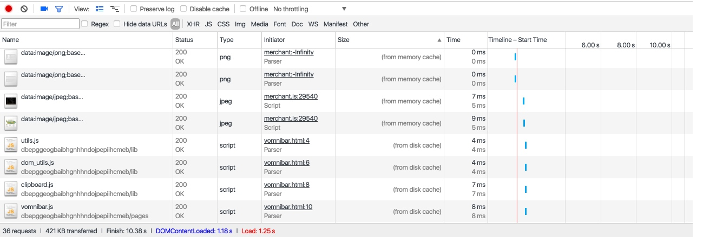</p>
<ul>
<li><p>按照网上说的(<a href="(http://stackoverflow.com/questions/1341089/using-meta-tags-to-turn-off-caching-in-all-browsers">StackOverflow: Using <meta> tags to turn off caching in all browsers</a>))，添加了清除缓存语句，然而图片还是 <code>from memory cache</code>，说明图片的缓存并不受 meta 控制</p>
<figure class="highlight html"><table><tr><td class="gutter"><pre><span class="line">1</span><br><span class="line">2</span><br><span class="line">3</span><br><span class="line">4</span><br><span class="line">5</span><br></pre></td><td class="code"><pre><span class="line"><span class="tag">&lt;<span class="name">meta</span> <span class="attr">http-equiv</span>=<span class="string">"cache-control"</span> <span class="attr">content</span>=<span class="string">"max-age=0"</span> /&gt;</span></span><br><span class="line"><span class="tag">&lt;<span class="name">meta</span> <span class="attr">http-equiv</span>=<span class="string">"cache-control"</span> <span class="attr">content</span>=<span class="string">"no-cache"</span> /&gt;</span></span><br><span class="line"><span class="tag">&lt;<span class="name">meta</span> <span class="attr">http-equiv</span>=<span class="string">"expires"</span> <span class="attr">content</span>=<span class="string">"0"</span> /&gt;</span></span><br><span class="line"><span class="tag">&lt;<span class="name">meta</span> <span class="attr">http-equiv</span>=<span class="string">"expires"</span> <span class="attr">content</span>=<span class="string">"Tue, 01 Jan 1980 1:00:00 GMT"</span> /&gt;</span></span><br><span class="line"><span class="tag">&lt;<span class="name">meta</span> <span class="attr">http-equiv</span>=<span class="string">"pragma"</span> <span class="attr">content</span>=<span class="string">"no-cache"</span> /&gt;</span></span><br></pre></td></tr></table></figure>
</li>
</ul>
<pre><code><figure class="highlight html"><table><tr><td class="gutter"><pre><span class="line">1</span><br><span class="line">2</span><br><span class="line">3</span><br></pre></td><td class="code"><pre><span class="line"><span class="tag">&lt;<span class="name">meta</span> <span class="attr">http-equiv</span>=<span class="string">"Cache-Control"</span> <span class="attr">content</span>=<span class="string">"no-cache, no-store, must-revalidate"</span> /&gt;</span></span><br><span class="line"><span class="tag">&lt;<span class="name">meta</span> <span class="attr">http-equiv</span>=<span class="string">"Pragma"</span> <span class="attr">content</span>=<span class="string">"no-cache"</span> /&gt;</span></span><br><span class="line"><span class="tag">&lt;<span class="name">meta</span> <span class="attr">http-equiv</span>=<span class="string">"Expires"</span> <span class="attr">content</span>=<span class="string">"0"</span> /&gt;</span></span><br></pre></td></tr></table></figure>
</code></pre><ul>
<li>在 Chrome 浏览器下，可以通过 <code>chrome://cache</code> 地址来查看当前 chrome 缓存的文件</li>
</ul>
<p>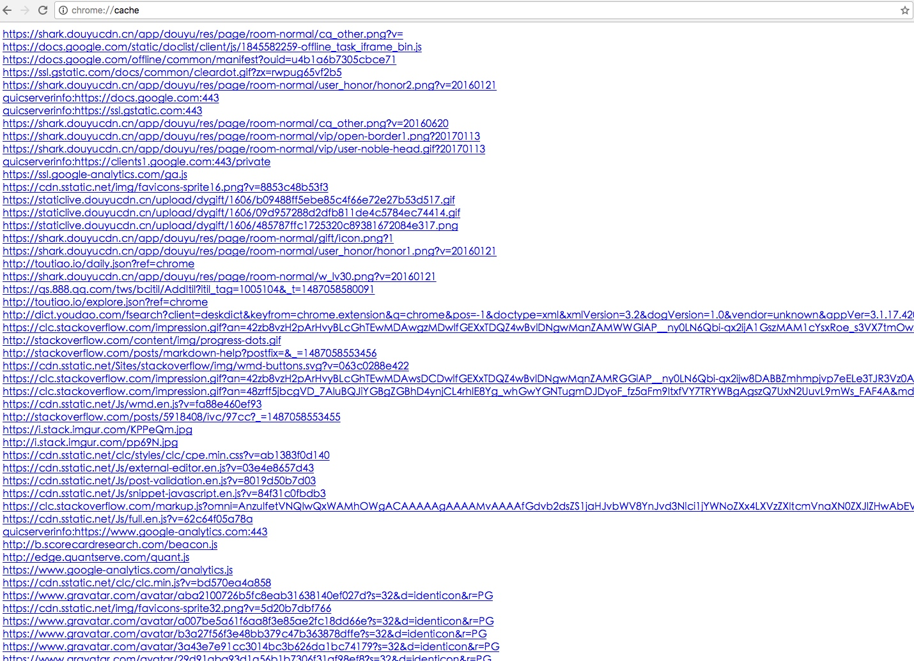</p>
<ul>
<li>发现工程中的文件有时候是 <code>from disk cache</code>，有时候是 <code>from memory cache</code></li>
</ul>
<p>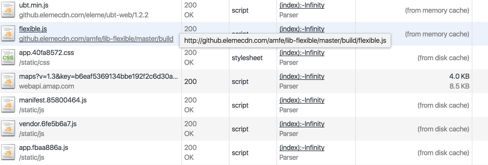</p>
<ul>
<li>加入了以下语句以后，清除缓存加刷新页面，ubt 文件加载了一次以后还是会显示 <code>from disk cache</code>，说明语句并没有起作用</li>
</ul>
<p></p>
<p></p>
<ul>
<li><strong>memory cache</strong> vs <strong>disk cache</strong>: 按照 Reddit 上的回答<a href="https://www.reddit.com/r/explainlikeimfive/comments/3660ig/eli5what_is_the_difference_between_disk_caching/" target="_blank" rel="noopener">What is the difference between disk caching and memory caching?</a>，浏览器缓存一般存于 <strong>disk cache</strong>，而系统缓存一般存于 <strong>memory cache</strong></li>
</ul>
<p>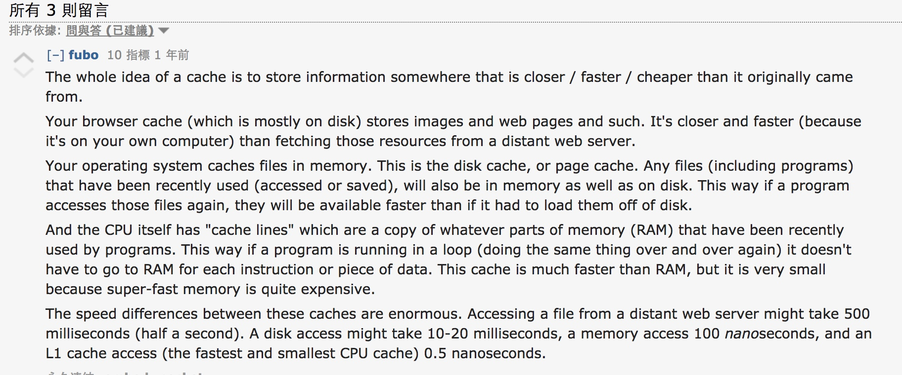</p>
<h2 id="相关链接"><a href="#相关链接" class="headerlink" title="相关链接"></a>相关链接</h2><ul>
<li><a href="http://stackoverflow.com/questions/49547/how-to-control-web-page-caching-across-all-browsers" target="_blank" rel="noopener">StackOverflow: How to control web page caching, across all browsers</a>: 赞同最多的答案</li>
<li><a href="(http://stackoverflow.com/questions/1341089/using-meta-tags-to-turn-off-caching-in-all-browsers">StackOverflow: Using <meta> tags to turn off caching in all browsers</a>)</li>
</ul>

      
    </div>
    
    <div class="article-info article-info-index">
      
      
      
	<div class="article-category tagcloud">
	<a class="article-category-link" href="/categories/未完成/">未完成</a>
	</div>


      
      <div class="clearfix"></div>
    </div>
    
  </div>
  
</article>


  
    <article id="post-日本行政区划" class="article article-type-post" itemscope itemprop="blogPost">
  
    <div class="article-meta">
      <a href="/2017/01/04/日本行政区划/" class="article-date">
  	<time datetime="2017-01-04T06:14:01.000Z" itemprop="datePublished">2017-01-04</time>
</a>
    </div>
  
  <div class="article-inner">
    
      <input type="hidden" class="isFancy">
    
    
      <header class="article-header">
        
  
    <h1 itemprop="name">
      <a class="article-title" href="/2017/01/04/日本行政区划/">日本行政区划</a>
    </h1>
  

      </header>
      
    
    <div class="article-entry" itemprop="articleBody">
      
        <h2 id="两级行政区划"><a href="#两级行政区划" class="headerlink" title="两级行政区划"></a>两级行政区划</h2><ul>
<li><p><strong>都、道、府、县</strong>（广域地方公共团体）：东京都，北海道，大阪府，京都府, 43县。其办事机构称为“厅”，即“都厅”、“道厅”、“府厅”、“县厅”，行政长官称为“知事”</p>
</li>
<li><p><strong>市、町、村</strong>（基础地方公共团体）：其办事机构称“役所”，即“市役所”、“町役所”、“村役所”，行政长官称为“市长”、“町长”、“村长”。其中，町相当于中国的镇。</p>
</li>
</ul>
<h2 id="八个地区"><a href="#八个地区" class="headerlink" title="八个地区"></a>八个地区</h2><p>根据地理位置，又可分为八个地区：北海道地方，东北地方，关东地方，中部地方，近畿地方，中国地方，四国地方，九州及冲绳地方</p>
<p></p>

      
    </div>
    
    <div class="article-info article-info-index">
      
      
	<div class="article-tag tagcloud">
		<ul class="article-tag-list"><li class="article-tag-list-item"><a class="article-tag-list-link" href="/tags/随笔/">随笔</a></li></ul>
	</div>

      

      
      <div class="clearfix"></div>
    </div>
    
  </div>
  
</article>


  
    <article id="post-Markdown语法学习" class="article article-type-post" itemscope itemprop="blogPost">
  
    <div class="article-meta">
      <a href="/2016/04/09/Markdown语法学习/" class="article-date">
  	<time datetime="2016-04-09T08:01:28.000Z" itemprop="datePublished">2016-04-09</time>
</a>
    </div>
  
  <div class="article-inner">
    
      <input type="hidden" class="isFancy">
    
    
      <header class="article-header">
        
  
    <h1 itemprop="name">
      <a class="article-title" href="/2016/04/09/Markdown语法学习/">Markdown语法学习</a>
    </h1>
  

      </header>
      
    
    <div class="article-entry" itemprop="articleBody">
      
        <p><strong>备注</strong>: 待完成，从开头到”图片大小”部分尚未处理</p>
<h2 id="语法总结"><a href="#语法总结" class="headerlink" title="语法总结"></a>语法总结</h2><ul>
<li><p>段落与换行:</p>
<ul>
<li>行尾多加两个空格，就可以换行</li>
<li><code>&lt;br&gt;</code></li>
</ul>
</li>
<li><p>标题:</p>
<ul>
<li><p>#标题1</p>
</li>
<li><h1 id="标题2"><a href="#标题2" class="headerlink" title="标题2"></a>标题2</h1></li>
<li><p>标题2<br>-</p>
</li>
</ul>
</li>
<li><p>引用: </p>
<ul>
<li><p>单行引用</p>
</li>
<li><blockquote>
<p>单行引用</p>
</blockquote>
</li>
<li><blockquote>
<p>嵌套引用</p>
<blockquote>
<p>嵌套嵌套</p>
</blockquote>
</blockquote>
</li>
<li><blockquote>
<p>引用中使用 <strong><em><code>markdown</code></em></strong> 语法</p>
</blockquote>
</li>
</ul>
</li>
<li><p>列表:</p>
<ul>
<li><p>无序列表</p>
<ul>
<li>第一项</li>
</ul>
<ul>
<li>第二项 </li>
</ul>
<ul>
<li>第三项</li>
</ul>
</li>
<li><p>有序列表</p>
<ol>
<li>有序列表以<code>数字</code>和<code>.</code>为首</li>
<li>数字的序列并不会影响生成的列表序列: </li>
<li>比如这样</li>
<li>也可以转义来取消序列的作用<br>6. </li>
</ol>
</li>
</ul>
</li>
<li><p>代码</p>
<ul>
<li><p>代码块</p>
<html><br><div style="color:#69d">蓝色的代码</div><br></html>
</li>
<li><p>内嵌代码: <code>&lt;title&gt;Markdown&lt;/title&gt;</code></p>
</li>
</ul>
</li>
<li><p>分割线</p>
<hr>
<hr>
<hr>
</li>
</ul>
<ul>
<li><p>超链接:</p>
<ul>
<li><p>本地文件:<a href="./images/icon.png">icon.png</a></p>
</li>
<li><p><a href="http://www.google.com/" target="_blank" rel="noopener">Google</a></p>
</li>
<li><p>[Google][]</p>
</li>
</ul>
<p>   [Google]: <a href="http://www.google.com/" target="_blank" rel="noopener">http://www.google.com/</a> “Google”</p>
<ul>
<li>自动转换为链接<ul>
<li>URL: <a href="http://www.google.com/" target="_blank" rel="noopener">http://www.google.com/</a></li>
<li>Email: <a href="mailto:&#49;&#50;&#51;&#64;&#101;&#x6d;&#x61;&#105;&#x6c;&#x2e;&#99;&#111;&#x6d;" target="_blank" rel="noopener">&#49;&#50;&#51;&#64;&#101;&#x6d;&#x61;&#105;&#x6c;&#x2e;&#99;&#111;&#x6d;</a></li>
</ul>
</li>
</ul>
</li>
<li><p>图片: </p>
<ul>
<li><p>行内式  </p>
<figure class="highlight js"><table><tr><td class="gutter"><pre><span class="line">1</span><br></pre></td><td class="code"><pre><span class="line"></span></span><br></pre></td></tr></table></figure>
<p></p>
</li>
<li><p>参考式</p>
<figure class="highlight js"><table><tr><td class="gutter"><pre><span class="line">1</span><br><span class="line">2</span><br><span class="line">3</span><br></pre></td><td class="code"><pre><span class="line"><span class="comment">// 注: hexo 中出不来结果</span></span><br><span class="line">![GitHub][github]</span><br><span class="line">[github]: https:<span class="comment">//avatars2.githubusercontent.com/u/3265208?v=3&amp;s=100 "GitHub,Social Coding"</span></span><br></pre></td></tr></table></figure>
</li>
</ul>
</li>
</ul>
<pre><code>    ![GitHub][github]
    [github]: https://avatars2.githubusercontent.com/u/3265208?v=3&amp;s=100 &quot;GitHub,Social Coding&quot;

*    图片大小:

    <figure class="highlight js"><table><tr><td class="gutter"><pre><span class="line">1</span><br></pre></td><td class="code"><pre><span class="line">&lt;img src=<span class="string">"https://avatars2.githubusercontent.com/u/3265208?v=3&amp;s=100"</span> alt=<span class="string">"GitHub"</span> title=<span class="string">"GitHub,Social Coding"</span> width=<span class="string">"200"</span> height=<span class="string">"200"</span> /&gt;</span><br></pre></td></tr></table></figure>

    &lt;img src=&quot;https://avatars2.githubusercontent.com/u/3265208?v=3&amp;s=100&quot; alt=&quot;GitHub&quot; title=&quot;GitHub,Social Coding&quot; width=&quot;200&quot; height=&quot;200&quot; /&gt;
</code></pre><ul>
<li><p>强调</p>
<ul>
<li><p><em>斜体</em> or _斜体_</p>
<figure class="highlight js"><table><tr><td class="gutter"><pre><span class="line">1</span><br></pre></td><td class="code"><pre><span class="line">*斜体* or _斜体_</span><br></pre></td></tr></table></figure>
</li>
<li><p><strong>粗体</strong> or <strong>粗体</strong></p>
<figure class="highlight js"><table><tr><td class="gutter"><pre><span class="line">1</span><br></pre></td><td class="code"><pre><span class="line">**粗体** or __粗体__</span><br></pre></td></tr></table></figure>
</li>
</ul>
</li>
<li><p>扩展语法</p>
<ul>
<li><p>语法高亮</p>
<figure class="highlight plain"><table><tr><td class="gutter"><pre><span class="line">1</span><br><span class="line">2</span><br><span class="line">3</span><br><span class="line">4</span><br><span class="line">5</span><br><span class="line">6</span><br></pre></td><td class="code"><pre><span class="line">// 用法</span><br><span class="line">```js</span><br><span class="line">window.addEventListener(&apos;load&apos;, function()&#123;</span><br><span class="line">	console.log(&apos;window loaded&apos;);</span><br><span class="line">&#125;)</span><br><span class="line">```</span><br></pre></td></tr></table></figure>
<figure class="highlight plain"><table><tr><td class="gutter"><pre><span class="line">1</span><br><span class="line">2</span><br><span class="line">3</span><br><span class="line">4</span><br></pre></td><td class="code"><pre><span class="line">// 结果</span><br><span class="line">window.addEventListener(&apos;load&apos;, function()&#123;</span><br><span class="line">	console.log(&apos;window loaded&apos;);</span><br><span class="line">&#125;)</span><br></pre></td></tr></table></figure>
</li>
<li><p>表格: </p>
<ul>
<li><code>|</code> 区分单元格</li>
<li><code>-</code> 分隔表头和其它行</li>
<li><p>用法</p>
<figure class="highlight plain"><table><tr><td class="gutter"><pre><span class="line">1</span><br><span class="line">2</span><br><span class="line">3</span><br><span class="line">4</span><br><span class="line">5</span><br></pre></td><td class="code"><pre><span class="line">| 链接 | 结果 | 原因 |</span><br><span class="line">|-----|---|----------|</span><br><span class="line">|文本内容| **`是`** |同协议同域名同端口|</span><br><span class="line">|文本内容| **`是`** |同协议同域名同端口|</span><br><span class="line">|文本内容| **`是`** |同协议同域名同端口|</span><br></pre></td></tr></table></figure>
</li>
<li><p>结果 </p>
</li>
</ul>
</li>
</ul>
</li>
</ul>
<table>
<thead>
<tr>
<th>链接</th>
<th>结果</th>
<th>原因</th>
</tr>
</thead>
<tbody>
<tr>
<td>文本内容</td>
<td><strong><code>是</code></strong></td>
<td>同协议同域名同端口</td>
</tr>
<tr>
<td>文本内容</td>
<td><strong><code>是</code></strong></td>
<td>同协议同域名同端口</td>
</tr>
<tr>
<td>文本内容</td>
<td><strong><code>是</code></strong></td>
<td>同协议同域名同端口</td>
</tr>
</tbody>
</table>
<h2 id="注意问题"><a href="#注意问题" class="headerlink" title="注意问题"></a>注意问题</h2><ul>
<li>想要引用反引号(<code>`</code>)的时候，使用多个反引号将其括起来(注意包括的反引号和内容中的反引号不能是连续的，需要用空格隔开)，如<code>`` ` ``</code></li>
</ul>

      
    </div>
    
    <div class="article-info article-info-index">
      
      
	<div class="article-tag tagcloud">
		<ul class="article-tag-list"><li class="article-tag-list-item"><a class="article-tag-list-link" href="/tags/工具/">工具</a></li><li class="article-tag-list-item"><a class="article-tag-list-link" href="/tags/语法/">语法</a></li></ul>
	</div>

      
	<div class="article-category tagcloud">
	<a class="article-category-link" href="/categories/未完成/">未完成</a>
	</div>


      
      <div class="clearfix"></div>
    </div>
    
  </div>
  
</article>


  
    <article id="post-正则表达式学习" class="article article-type-post" itemscope itemprop="blogPost">
  
    <div class="article-meta">
      <a href="/2016/04/08/正则表达式学习/" class="article-date">
  	<time datetime="2016-04-08T07:35:56.000Z" itemprop="datePublished">2016-04-08</time>
</a>
    </div>
  
  <div class="article-inner">
    
      <input type="hidden" class="isFancy">
    
    
      <header class="article-header">
        
  
    <h1 itemprop="name">
      <a class="article-title" href="/2016/04/08/正则表达式学习/">正则表达式学习</a>
    </h1>
  

      </header>
      
    
    <div class="article-entry" itemprop="articleBody">
      
        <h2 id="测试工具"><a href="#测试工具" class="headerlink" title="测试工具"></a>测试工具</h2><ul>
<li>sublime 中的搜索功能: 打开正则开关(<strong>Regular expression</strong>)和高亮开关(<strong>Highlight matches</strong>)</li>
<li>网上测试工具:<ul>
<li><a href="http://tool.oschina.net/regex/" target="_blank" rel="noopener">开源中国在线工具</a></li>
<li><a href="http://tool.chinaz.com/regex/" target="_blank" rel="noopener">站长工具</a></li>
</ul>
</li>
</ul>
<h2 id="JavaScript-中的用法"><a href="#JavaScript-中的用法" class="headerlink" title="JavaScript 中的用法"></a><strong>JavaScript</strong> 中的用法</h2><ul>
<li><p><code>replace</code>方法: <code>stringObject.replace(regexp,replacement)</code></p>
<ul>
<li><code>replacement</code> 参数<ul>
<li><code>$1、$2、...、$99</code>: 与 <strong>regexp</strong> 中的第 1 到第 99 个子表达式相匹配的文本</li>
<li><code>$&amp;</code>: 与 <strong>regexp</strong> 相匹配的子串。 </li>
<li><code>$`</code>: 位于匹配子串左侧的文本。 </li>
<li><code>$&#39;</code>: 位于匹配子串右侧的文本。 </li>
<li><code>%</code>: 直接量符号。</li>
</ul>
</li>
<li><p>例子</p>
<figure class="highlight js"><table><tr><td class="gutter"><pre><span class="line">1</span><br><span class="line">2</span><br><span class="line">3</span><br></pre></td><td class="code"><pre><span class="line"><span class="comment">// 替换两个名字的顺序</span></span><br><span class="line">name = <span class="string">"Doe, John"</span>;</span><br><span class="line">name.replace(<span class="regexp">/(\w+)\s*, \s*(\w+)/</span>, <span class="string">"$2 $1"</span>);</span><br></pre></td></tr></table></figure>
</li>
</ul>
</li>
</ul>
<h3 id="RegExp-对象"><a href="#RegExp-对象" class="headerlink" title="RegExp 对象"></a><strong>RegExp</strong> 对象</h3><ul>
<li>修饰符<ul>
<li><code>i</code>: 执行对大小写不敏感的匹配 =&gt; <code>/[a-z]/i</code> 匹配a-z，A-Z</li>
<li><code>g</code>: 执行全局匹配（查找所有匹配而非在找到第一个匹配后停止）=&gt; <code>/[a-z]/g</code></li>
<li><code>m</code>: 执行多行匹配</li>
</ul>
</li>
</ul>
<h2 id="普通语法"><a href="#普通语法" class="headerlink" title="普通语法"></a>普通语法</h2><ul>
<li><p>例子</p>
<ul>
<li><code>0\d{2}-\d{8}</code> 匹配 <strong>010-88888888</strong> 这类的电话</li>
<li><code>^\d{5,12}$</code> 填写的 QQ 号必须为 5 位到 12 位数字时</li>
<li><code>\ba\w*\b</code> 匹配以字母 a 开头的单词</li>
<li><code>\(?0\d{2}[) -]?\d{8}</code> 匹配几种格式的电话：<br><strong>(010)88886666</strong>，或 <strong>022-22334455</strong>，或 <strong>02912345678</strong></li>
<li><code>((2([0-4]\d|5[0-5])|1?\d{1,2})\.){3}(2([0-4]\d|5[0-5])|1?\d{1,2})</code> 匹配 IP 地址</li>
<li><code>\b(\w+)\b\s+\1\b</code> 可以用来匹配重复的单词，像 <strong>go go</strong>, 或者 <strong>kitty kitty</strong></li>
<li><code>\b(?&lt;Word&gt;\w+)\b\s+\k&lt;Word&gt;\b</code> 也可以</li>
<li><p><strong>url 解析</strong> 的例子: </p>
<figure class="highlight js"><table><tr><td class="gutter"><pre><span class="line">1</span><br><span class="line">2</span><br><span class="line">3</span><br><span class="line">4</span><br><span class="line">5</span><br><span class="line">6</span><br><span class="line">7</span><br><span class="line">8</span><br><span class="line">9</span><br><span class="line">10</span><br></pre></td><td class="code"><pre><span class="line"><span class="function"><span class="keyword">function</span> <span class="title">parseUrl</span>(<span class="params">url</span>)</span>&#123;</span><br><span class="line">	<span class="keyword">var</span> urlPattern = <span class="regexp">/^(?:([A-Za-z]+):)?(\/&#123;0,3&#125;)([0-9.\-A-Za-z]+)(?::(\d+))?(?:\/([^?#]*))?(?:\?([^#]*))?(?:#(.*))?$/</span>;</span><br><span class="line">	<span class="keyword">var</span> result = urlPattern.exec(url);</span><br><span class="line">	<span class="keyword">var</span> type = [<span class="string">'url'</span>, <span class="string">'scheme'</span>, <span class="string">'slash'</span>, <span class="string">'host'</span>, <span class="string">'port'</span>, <span class="string">'path'</span>, <span class="string">'query'</span>, <span class="string">'hash'</span>];</span><br><span class="line">	</span><br><span class="line">	<span class="keyword">return</span> result;</span><br><span class="line">&#125;</span><br><span class="line"></span><br><span class="line">parseUrl(<span class="string">"http://tool.oschina.net:80/regex?haha=true#fragment"</span>);</span><br><span class="line"><span class="comment">// ["http://tool.oschina.net:80/regex?haha=true#fragment", "http", "//", "tool.oschina.net", "80", "regex", "haha=true", "fragment"]</span></span><br></pre></td></tr></table></figure>
</li>
</ul>
</li>
</ul>
<ul>
<li><p>元字符</p>
<ul>
<li><code>\w</code> 匹配 字符、数字、下划线、汉字 等</li>
<li><code>\d</code> 匹配数字</li>
<li><code>\s</code> 匹配任意的空白符：空格，制表，换行，中文全角空格等</li>
<li><code>.</code> 匹配除换行符(结束符)以外的任意字符</li>
</ul>
</li>
<li><p>位置匹配：</p>
<ul>
<li><code>^</code>：”字符串”的开始</li>
<li><code>$</code>：”字符串”的结束</li>
<li><code>\b</code>: 表示一个位置 =&gt; 其前一个和后一个字符不全是 <code>\w</code></li>
</ul>
</li>
<li><p>重复匹配：限定符</p>
<ul>
<li><code>*</code>     重复零次或更多次</li>
<li><code>+</code>     重复一次或更多次</li>
<li><code>?</code>     重复零次或一次</li>
<li><code>{n}</code> 重复n次</li>
<li><code>{n,}</code> 重复n次或更多次</li>
<li><code>{n,m}</code> 重复n到m次</li>
</ul>
</li>
<li><p>元素集：<code>[]</code> 里面表示一个范围</p>
<ul>
<li><code>[aeiou]</code> 匹配英文元音字母</li>
<li><code>[0-9]</code> 匹配数字,即\d</li>
<li><code>[0-9a-zA-Z]</code> 匹配数字和字母</li>
</ul>
</li>
<li><p>分支条件：|    把几种不同的规则分隔开(按顺序匹配)</p>
<ul>
<li><code>0\d{2}-\d{8}|0\d{3}-\d{7}</code> 这个表达式能匹配两种以连字号分隔的电话号码：一种是三位区号，8 位本地号(<strong>010-12345678</strong>)，一种是4位区号，7位本地号(<strong>0376-2233445</strong>)。</li>
</ul>
</li>
<li><p>分组：可以用小括号来指定子表达式(也叫做分组)</p>
<ul>
<li><code>(\d{1,3}\.){3}\d{1,3}</code> 是一个简单的 IP 地址匹配表达式</li>
</ul>
</li>
<li><p>反义：</p>
<ul>
<li><code>\W</code> 匹配任意不是字母，数字，下划线，汉字的字符</li>
<li><code>\S</code> 匹配任意不是空白符的字符</li>
<li><code>\D</code> 匹配任意非数字的字符</li>
<li><code>\B</code> 匹配不是单词开头或结束的位置</li>
<li><code>[^x]</code>    匹配 <strong>除了 x 以外</strong> 的任意字符</li>
<li><code>[^aeiou]</code> 匹配除了 aeiou 这几个字母以外的任意字符</li>
</ul>
</li>
<li><p>后向引用（分组）：使用小括号指定一个子表达式后，匹配这个子表达式的文本(也就是此分组捕获的内容)可以在表达式或其它程序中作进一步的处理。默认情况下，每个分组会自动拥有一个组号，规则是: <strong>从左向右，以分组的左括号为标志，第一个出现的分组的组号为1，第二个为2</strong></p>
<ul>
<li><code>\1</code>: 代表分组1匹配的文本</li>
<li>捕获    <ul>
<li><code>(exp)</code> 匹配 exp，并捕获文本到自动命名的组里</li>
<li><code>(?&lt;name&gt;exp)</code> 匹配 exp，并捕获文本到名称为 name 的组里，也可以写成 <code>(?&#39;name&#39;exp)</code></li>
<li><code>(?:exp)</code> 匹配 exp，不捕获匹配的文本，也不给此分组分配组号</li>
</ul>
</li>
</ul>
</li>
<li><p>零宽断言（<strong>匹配位置！</strong>）：用于查找在某些内容(但并不包括这些内容)之前或之后的东西，也就是说它们像\b,^,$那样用于指定一个位置，这个位置应该满足一定的条件(即断言)，因此它们也被称为零宽断言</p>
<ul>
<li><code>(?=exp)</code> 零宽度正预测先行断言，断言自身出现的位置的后面能匹配表达式 exp，也就是匹配 exp 前面的位置<ul>
<li><code>\b\w+(?=ing\b)</code> 匹配以 ing 结尾的单词的前面部分(<strong>除了 ing 以外的部分</strong>)</li>
</ul>
</li>
<li><code>(?&lt;=exp)</code> 零宽度正回顾后发断言，匹配 exp 后面的位置</li>
<li><code>(?!exp)</code> 匹配后面跟的不是 exp 的位置</li>
<li><code>(?&lt;!exp)</code> 匹配前面不是 exp 的位置</li>
</ul>
</li>
<li><p>匹配优先级：</p>
<ul>
<li>最先开始的匹配拥有最高优先级 —— <strong>The match that begins earliest wins</strong></li>
<li>贪婪：当正则表达式中包含能接受重复的限定符时，通常的行为是（在使整个表达式能得到匹配的前提下）匹配尽可能多的字符</li>
<li>转化为懒惰匹配模式：要在限定符后面加上一个问号 <code>?</code></li>
</ul>
</li>
<li><p>需要转义的字符要注意</p>
<ul>
<li><code>\/</code>: 避免误认为是 正则表达式的结束符</li>
<li><code>\?</code>: 避免误认为是 非捕获匹配符或是限定符</li>
<li><code>\.</code>: 避免误认为是 任意匹配元字符</li>
</ul>
</li>
<li><p>练习:</p>
<ul>
<li>匹配数字: <code>/^-?$/</code></li>
</ul>
</li>
</ul>

      
    </div>
    
    <div class="article-info article-info-index">
      
      
	<div class="article-tag tagcloud">
		<ul class="article-tag-list"><li class="article-tag-list-item"><a class="article-tag-list-link" href="/tags/工具/">工具</a></li><li class="article-tag-list-item"><a class="article-tag-list-link" href="/tags/语法/">语法</a></li></ul>
	</div>

      
	<div class="article-category tagcloud">
	<a class="article-category-link" href="/categories/已归档/">已归档</a>
	</div>


      
      <div class="clearfix"></div>
    </div>
    
  </div>
  
</article>


  
    <article id="post-Github Pages + Hexo 写博客" class="article article-type-post" itemscope itemprop="blogPost">
  
    <div class="article-meta">
      <a href="/2016/04/08/Github Pages + Hexo 写博客/" class="article-date">
  	<time datetime="2016-04-08T07:02:28.000Z" itemprop="datePublished">2016-04-08</time>
</a>
    </div>
  
  <div class="article-inner">
    
      <input type="hidden" class="isFancy">
    
    
      <header class="article-header">
        
  
    <h1 itemprop="name">
      <a class="article-title" href="/2016/04/08/Github Pages + Hexo 写博客/">Github Pages + Hexo 写博客</a>
    </h1>
  

      </header>
      
    
    <div class="article-entry" itemprop="articleBody">
      
        <h2 id="相关链接"><a href="#相关链接" class="headerlink" title="相关链接"></a>相关链接</h2><ul>
<li><a href="http://wiki.jikexueyuan.com/project/hexo-document/" target="_blank" rel="noopener">极客学院</a></li>
</ul>
<h2 id="本人博客地址"><a href="#本人博客地址" class="headerlink" title="本人博客地址"></a>本人博客地址</h2><ul>
<li><a href="http://hopelyn.github.io/" target="_blank" rel="noopener">http://hopelyn.github.io/</a></li>
<li><a href="http://blog.hopeleft.com/">http://blog.hopeleft.com/</a></li>
</ul>
<h2 id="配置环境"><a href="#配置环境" class="headerlink" title="配置环境"></a>配置环境</h2><h3 id="Github-Pages-Prjoect-搭建"><a href="#Github-Pages-Prjoect-搭建" class="headerlink" title="Github Pages Prjoect 搭建"></a>Github Pages Prjoect 搭建</h3><h3 id="Hexo配置"><a href="#Hexo配置" class="headerlink" title="Hexo配置"></a>Hexo配置</h3><h4 id="安装"><a href="#安装" class="headerlink" title="安装"></a>安装</h4><ul>
<li><p>安装 Node 环境: <a href="https://hexo.io/docs/index.html#Install-Node-js" target="_blank" rel="noopener">https://hexo.io/docs/index.html#Install-Node-js</a></p>
<ul>
<li><code>curl https://raw.github.com/creationix/nvm/master/install.sh | sh</code></li>
<li>或者使用 nvm : <code>nvm install 4</code></li>
</ul>
</li>
<li><p>安装 Git 环境: <a href="https://hexo.io/docs/index.html#Install-Git" target="_blank" rel="noopener">https://hexo.io/docs/index.html#Install-Git</a></p>
<ul>
<li>使用 homebrew: <code>brew install git</code></li>
<li>使用 macports: <code>port instal git</code></li>
</ul>
</li>
<li><p>安装 hexo (使用 npm 安装):<code>npm install -g hexo-cli</code></p>
</li>
<li><p>安装 <code>hexo-deployer-git</code> =&gt; 可以发布 hexo 到相应的 git rep 上: <code>npm install hexo-deployer-git --save</code> </p>
</li>
</ul>
<h4 id="自定义配置"><a href="#自定义配置" class="headerlink" title="自定义配置"></a>自定义配置</h4><ul>
<li><p>修改 <code>_config.yml</code> 文件:</p>
<figure class="highlight yml"><table><tr><td class="gutter"><pre><span class="line">1</span><br><span class="line">2</span><br><span class="line">3</span><br><span class="line">4</span><br><span class="line">5</span><br></pre></td><td class="code"><pre><span class="line"><span class="string">//</span> <span class="string">_config.xml</span></span><br><span class="line"><span class="attr">deploy:</span></span><br><span class="line">	<span class="attr">type:</span> <span class="string">git</span></span><br><span class="line">	<span class="attr">repo:</span> <span class="string">git@github.com:HopeLyn/hopelyn.github.com.git</span></span><br><span class="line">	<span class="attr">branch:</span> <span class="string">master</span></span><br></pre></td></tr></table></figure>
</li>
<li><p>在 <strong>./public</strong> 文件夹下添加 <code>CNAME</code> 文件，并写下需要重定向的域名 </p>
<figure class="highlight js"><table><tr><td class="gutter"><pre><span class="line">1</span><br><span class="line">2</span><br></pre></td><td class="code"><pre><span class="line"><span class="comment">// CNAME</span></span><br><span class="line">blog.hopeleft.com</span><br></pre></td></tr></table></figure>
</li>
<li><p>修改 theme</p>
<ul>
<li><p>下载主题到 <strong>./themes</strong> 文件夹下</p>
<figure class="highlight js"><table><tr><td class="gutter"><pre><span class="line">1</span><br><span class="line">2</span><br><span class="line">3</span><br><span class="line">4</span><br><span class="line">5</span><br></pre></td><td class="code"><pre><span class="line"><span class="comment">// 安装 Next 主题</span></span><br><span class="line">git clone https:<span class="comment">//github.com/iissnan/hexo-theme-next themes/next</span></span><br><span class="line"></span><br><span class="line"><span class="comment">// 或者安装 yilia 主题</span></span><br><span class="line">git clone https:<span class="comment">//github.com/litten/hexo-theme-yilia.git themes/yilia</span></span><br></pre></td></tr></table></figure>
</li>
<li><p>修改 <code>_config.yml</code> 文件</p>
<figure class="highlight js"><table><tr><td class="gutter"><pre><span class="line">1</span><br><span class="line">2</span><br></pre></td><td class="code"><pre><span class="line"><span class="comment">// #theme: next</span></span><br><span class="line">theme: yilia</span><br></pre></td></tr></table></figure>
</li>
</ul>
</li>
<li><p><code>sitemap</code>: </p>
<ul>
<li><p>普通的 <strong>sitemap</strong> 插件</p>
<ul>
<li><p>安装</p>
<figure class="highlight js"><table><tr><td class="gutter"><pre><span class="line">1</span><br></pre></td><td class="code"><pre><span class="line">npm install hexo-generator-sitemap --save</span><br></pre></td></tr></table></figure>
</li>
<li><p>修改 <code>_config.xml</code></p>
<figure class="highlight js"><table><tr><td class="gutter"><pre><span class="line">1</span><br><span class="line">2</span><br><span class="line">3</span><br></pre></td><td class="code"><pre><span class="line"><span class="comment">// _config.xml</span></span><br><span class="line">sitemap:</span><br><span class="line">         path: sitemap.xml</span><br></pre></td></tr></table></figure>
</li>
</ul>
</li>
<li><p><strong>baidu-sitemap</strong> 插件</p>
<ul>
<li><p>安装</p>
<figure class="highlight js"><table><tr><td class="gutter"><pre><span class="line">1</span><br></pre></td><td class="code"><pre><span class="line">npm install hexo-generator-baidu-sitemap --save</span><br></pre></td></tr></table></figure>
</li>
<li><p>修改 <code>_config.xml</code></p>
<figure class="highlight js"><table><tr><td class="gutter"><pre><span class="line">1</span><br><span class="line">2</span><br><span class="line">3</span><br></pre></td><td class="code"><pre><span class="line"><span class="comment">// _config.xml</span></span><br><span class="line">baidusitemap:</span><br><span class="line">	path: baidusitemap.xml</span><br></pre></td></tr></table></figure>
</li>
</ul>
</li>
</ul>
</li>
<li><p>生成 <code>RSS</code>:</p>
<ul>
<li>安装插件: <code>npm install hexo-generator-feed --save</code></li>
<li><p>修改设置:</p>
<figure class="highlight js"><table><tr><td class="gutter"><pre><span class="line">1</span><br><span class="line">2</span><br><span class="line">3</span><br><span class="line">4</span><br><span class="line">5</span><br></pre></td><td class="code"><pre><span class="line"><span class="comment">// _config.xml</span></span><br><span class="line">feed:</span><br><span class="line">	type: atom</span><br><span class="line">	path: atom.xml</span><br><span class="line">	limit: <span class="number">20</span></span><br></pre></td></tr></table></figure>
</li>
</ul>
</li>
<li><p><code>yilia</code>主题的自定义配置</p>
<ul>
<li><p>language: 在主目录下的 <code>_config.yml</code> 中修改</p>
<figure class="highlight"><table><tr><td class="gutter"><pre><span class="line">1</span><br></pre></td><td class="code"><pre><span class="line">language: zh-Hans #简体中文</span><br></pre></td></tr></table></figure>
</li>
</ul>
</li>
</ul>
<h3 id="使用方法"><a href="#使用方法" class="headerlink" title="使用方法"></a>使用方法</h3><ul>
<li><p>新建文章: <code>hexo new &#39;My Post Name&#39;</code> =&gt; 就会在 <strong>./source/_posts</strong> 下新建一个 <code>My Post Name.md</code> 文件</p>
</li>
<li><p>通过 <code>hexo d -generate</code> 生成 html 文件(在 public 文件夹下)，并发布到 github 上</p>
</li>
<li><p><code>hexo s</code>: 启动本地服务，方便调整和配置</p>
</li>
</ul>
<h3 id="写文章方法"><a href="#写文章方法" class="headerlink" title="写文章方法"></a>写文章方法</h3><ul>
<li><p>文章的头部</p>
<ul>
<li><p>用<code>hexo new &#39;My Post Name&#39;</code>命令新建文章的话会自动生成开头，如下所示</p>
<figure class="highlight js"><table><tr><td class="gutter"><pre><span class="line">1</span><br><span class="line">2</span><br><span class="line">3</span><br><span class="line">4</span><br><span class="line">5</span><br></pre></td><td class="code"><pre><span class="line">---</span><br><span class="line">title: Github Pages + Hexo 写博客</span><br><span class="line">date: <span class="number">2016</span><span class="number">-04</span><span class="number">-09</span> <span class="number">16</span>:<span class="number">11</span>:<span class="number">31</span></span><br><span class="line">tags:</span><br><span class="line">---</span><br></pre></td></tr></table></figure>
</li>
</ul>
</li>
<li><p>文章的主体</p>
<ul>
<li>基本按照 <a href="http://www.appinn.com/markdown/" target="_blank" rel="noopener">Markdown</a> 语法</li>
<li><p><strong>注意事项</strong></p>
<ul>
<li>在写副标题的时候，需要在<code>##</code> 和标题名中间留下空格，如 <code>## 使用方法</code>，否则会显示 <code>##使用方法</code> 在页面上，而不转义</li>
<li><p>在写列表时(如下所示)，多余的空行有时会导致语义上的误解，比如将其当作是引用的换行符</p>
<figure class="highlight js"><table><tr><td class="gutter"><pre><span class="line">1</span><br><span class="line">2</span><br></pre></td><td class="code"><pre><span class="line">*  这是第一个列表</span><br><span class="line">*  这是第二个列表</span><br></pre></td></tr></table></figure>
</li>
</ul>
</li>
</ul>
</li>
</ul>
<h3 id="常见问题"><a href="#常见问题" class="headerlink" title="常见问题"></a>常见问题</h3><ul>
<li><p><code>WARN  No layout: index.html</code>: 当使用 git 来保存 hexo 文件夹时，因为 yilia 和 next 是单独的 git project，所以当你换电脑，或者重新 clone 这个工程时，yilia 和 next 只剩下空的文件夹</p>
<ul>
<li><p>解决方法一: 重新拉取 =&gt; 但是当你用 git 管理 hexo 项目的时候，这些主题并不会 push 上去</p>
<figure class="highlight bash"><table><tr><td class="gutter"><pre><span class="line">1</span><br><span class="line">2</span><br></pre></td><td class="code"><pre><span class="line">git <span class="built_in">clone</span> https://github.com/litten/hexo-theme-yilia.git themes/yilia</span><br><span class="line">git <span class="built_in">clone</span> https://github.com/iissnan/hexo-theme-next.git themes/next</span><br></pre></td></tr></table></figure>
</li>
<li><p>解决方法二: 通过 git subtree 来管理</p>
<figure class="highlight bash"><table><tr><td class="gutter"><pre><span class="line">1</span><br><span class="line">2</span><br><span class="line">3</span><br><span class="line">4</span><br><span class="line">5</span><br><span class="line">6</span><br><span class="line">7</span><br><span class="line">8</span><br></pre></td><td class="code"><pre><span class="line">// 新建一个指向远程仓库的 remote </span><br><span class="line">git remote add yilia https://github.com/litten/hexo-theme-yilia.git</span><br><span class="line"></span><br><span class="line">// 在指定路径下建立 subtree，并同步代码</span><br><span class="line">git subtree add —-prefix=themes/yilia/ yilia master</span><br><span class="line"></span><br><span class="line">// 或者直接建立</span><br><span class="line">git subtree add --prefix=themes/next --squash https://github.com/iissnan/hexo-theme-next.git master</span><br></pre></td></tr></table></figure>
</li>
</ul>
</li>
</ul>

      
    </div>
    
    <div class="article-info article-info-index">
      
      
	<div class="article-tag tagcloud">
		<ul class="article-tag-list"><li class="article-tag-list-item"><a class="article-tag-list-link" href="/tags/实践/">实践</a></li><li class="article-tag-list-item"><a class="article-tag-list-link" href="/tags/工具/">工具</a></li></ul>
	</div>

      
	<div class="article-category tagcloud">
	<a class="article-category-link" href="/categories/未完成/">未完成</a>
	</div>


      
      <div class="clearfix"></div>
    </div>
    
  </div>
  
</article>


  
  
</div>
      <footer id="footer">
  <div class="outer">
    <div id="footer-info">
    	<div class="footer-left">
    		&copy; 2019 Lyn
    	</div>
      	<div class="footer-right">
      		<a href="http://hexo.io/" target="_blank">Hexo</a>  Theme <a href="https://github.com/litten/hexo-theme-yilia" target="_blank">Yilia</a> by Litten
      	</div>
    </div>
  </div>
</footer>
    </div>
    
  <link rel="stylesheet" href="/fancybox/jquery.fancybox.css">


<script>
	var yiliaConfig = {
		fancybox: true,
		mathjax: true,
		animate: true,
		isHome: true,
		isPost: false,
		isArchive: false,
		isTag: false,
		isCategory: false,
		open_in_new: false
	}
</script>
<script src="http://7.url.cn/edu/jslib/comb/require-2.1.6,jquery-1.9.1.min.js"></script>
<script src="/js/main.js"></script>


<script type="text/x-mathjax-config">
MathJax.Hub.Config({
    tex2jax: {
        inlineMath: [ ['$','$'], ["\\(","\\)"]  ],
        processEscapes: true,
        skipTags: ['script', 'noscript', 'style', 'textarea', 'pre', 'code']
    }
});

MathJax.Hub.Queue(function() {
    var all = MathJax.Hub.getAllJax(), i;
    for(i=0; i < all.length; i += 1) {
        all[i].SourceElement().parentNode.className += ' has-jax';                 
    }       
});
</script>

<script type="text/javascript" src="http://cdn.mathjax.org/mathjax/latest/MathJax.js?config=TeX-AMS-MML_HTMLorMML">
</script>


  </div>
</body>
</html>